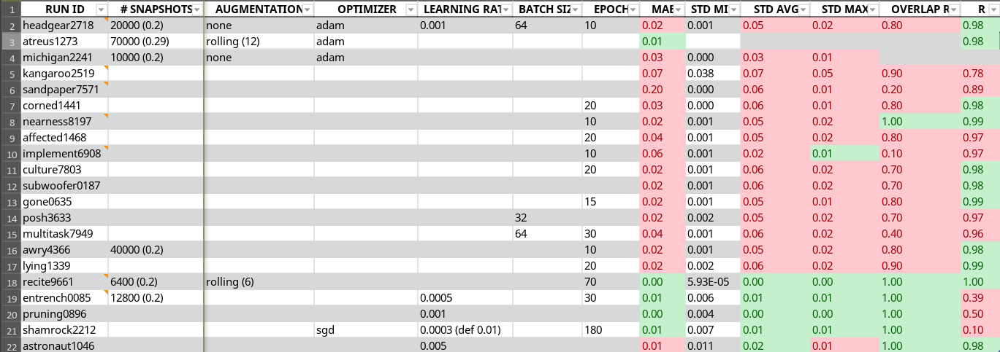
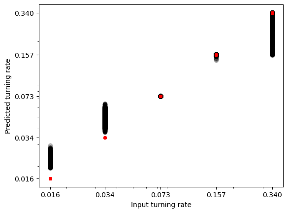
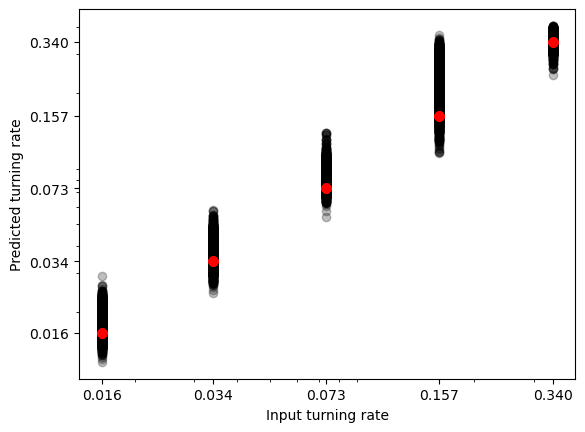
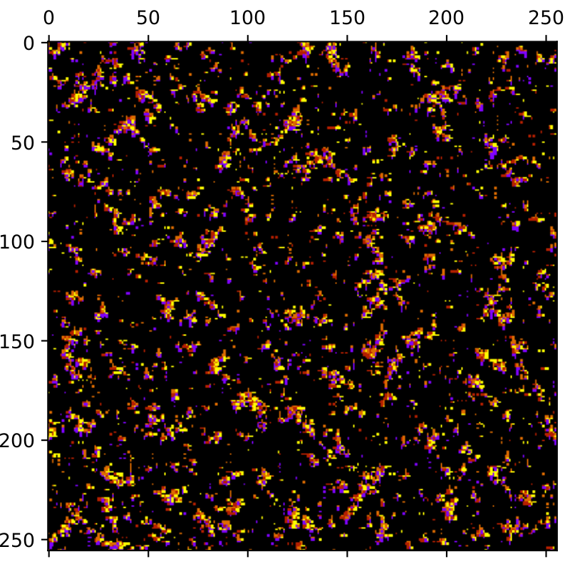
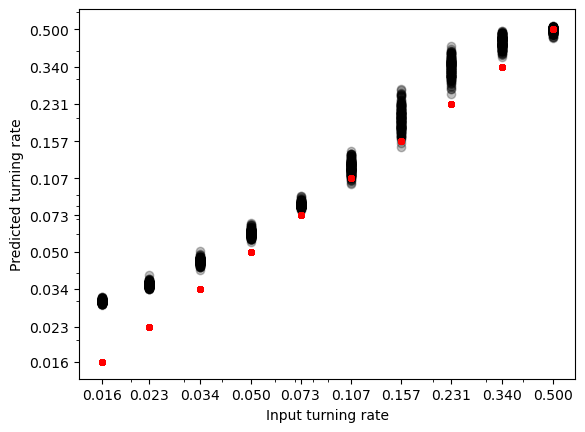

Week 16
0. Table of Contents
- Introduction
- Checklist
- Model List and Storage
- Shorthand Model List
- New Architecture
- More Tumbling Rates
- Bigger N Values
1. Introduction
Now that we have set up the machine learning system and begun familiarising ourselves with its architecture, the aim of the next few weeks (this one included) is to begin experimenting on different training and validation data, as well as tuning the architecture.
2. Checklist
Our evolving checklist of things to explore regarding CNNs can be found here (Sheet 1). The highlight of what has been currently done and what is currently aimed at has been transcribed below.
3. Model List and Storage
In order to keep track of our many models, involving different layers and different data training sets, we opted to create a standardised table detailing the different parameters going into the system, such as training data snapshots, ratio of training to prediction data, etc. Below is a quick (preliminary) snapshot of the first few lines of the table, for reference. Note that a lot of columns have been skipped, which detail the utilised densities, tumbling rates and system sizes used for training and validation.

The growing model list can be found here, on the same link as the checklist above (Sheet 2). Below are transcribed our current sought metrics (coloured in green within the table above).
- Maximum STD: 0.02
- This is the maximum standard deviation a particular prediction spread can have. For example, given a model, the maximum STD determines the biggest spread in the output predictions (which are generated for some specific tumbling rates). Ideally the spreads would be similar across, but we can consider the learning to have failed if any individual prediction has too big a spread.
- Average STD: 0.01
- This is the average standard deviation a particular prediction spread can have. Taking the same example as above, this averages over all predicted tumbling rates to obtain an average spread deviation. This naturally has to be small as well in order for the model to succeed.
- Mean Average Error: 0.01
- Pearson’s Coefficient: 0.975
- Overlap Ratio: 1
- This ratio indicates the amount of tumbling rate prediction spreads which overlap at all with the expected tumbling rates.
Combining a ubiquitous overlap ratio with a very small average and maximum standard deviation yields results which are both very accurate and very precise.
4. Shorthand Model List
While each model is referred to by the aforementioned standardisation, it is also useful to communicate architecture more quickly. Here’s the current list of different architecturess being used, all indexed by a model number (MN). The latter predictions generated in Weeks 13-15 are all done with MN_1, for example.
MN_1
- CONV (filters=3,kernel_size=(3,3),padding=‘same’,strides=(3,3),activation=“relu”, input_shape=shape)
- BN
- CONV (filters=3,kernel_size=(3,3),padding=‘same’)
- BN
- MAXPOOL (pool_size=(3,3))
- CONV (filters=6,kernel_size=(3,3),padding=‘same’)
- BN
- CONV (filters=6,kernel_size=(3,3),padding=‘same’)
- BN
- MAXPOOL (pool_size=(3,3))
- FC (units=128,activation=‘relu’)
- DO (0.2) (without layout optimiser)
- FC (units=10,activation=‘softmax’)
- FLATTEN
- FC (units=1,activation=‘linear’)
MN_2
- CONV (filters=3,kernel_size=(3,3),padding=‘same’,input_shape=shape)
- MAXPOOL (pool_size=(2,2),padding=‘same’)
- ReLU
- BN
- CONV (filters=6,kernel_size=(5,5),padding=‘same’)
- MAXPOOL (pool_size=(2,2),padding=‘same’)
- ReLU
- BN
- AVGPOOL
- DO (0.2) (without layout optimiser)
- FC (units=64,activation=‘relu’)
- DO (0.2) (without layout optimiser)
- FC (units=10,activation=‘softmax’)
- FLATTEN
- FC (units=1,activation=‘linear’)
As more architectures are employed, the full list will be updated here.
5. New Architecture
Using the architecture of MN_2, we can try to examine a similar case to which we applied MN_1. Below is the prediction of model atreus1273, applied to a sample size of 70000 iterations spread equally among 5 turning rates (50000 training, 20000 validation), for density 0.15.

The fitting overall seems to be worse, but the top middle values are almost perfectly fitted. My lab partner has gotten better results with this model, so I will continue exploring it in parallel with MN_1 for now.
6. More Tumbling Rates
There is an obvious extension in increasing the amount of tumbling rates utilised. This may help the CNN pick up on the clustering/dissipation pattern better by providing more scenarios in which it can be examined.
Below is an example reprouction of MN_1 trained on the same values as the last example in Weeks 13-15, model median4431. It has now been standardised to be easliy referred to in our table.

Note that this is using rolled data, so it is bound to be more accurate than the unrolled variants we will consider below.
7. Bigger N Values
Here is a brief attempt to train the CNN on broader N values. This will be investigated more in depth at the end of the project. Model michigan2241 is trained on \(N_x=N_y=256\); an example screenshot can be found below.

Running MN_2 architecture, the training yields the following predictions:

We can see the fitting does not match
Model: "sequential"
_________________________________________________________________
Layer (type) Output Shape Param #
=================================================================
conv2d (Conv2D) (None, 256, 256, 3) 30
max_pooling2d (MaxPooling2 (None, 128, 128, 3) 0
D)
re_lu (ReLU) (None, 128, 128, 3) 0
batch_normalization (Batch (None, 128, 128, 3) 12
Normalization)
conv2d_1 (Conv2D) (None, 128, 128, 6) 456
max_pooling2d_1 (MaxPoolin (None, 64, 64, 6) 0
g2D)
re_lu_1 (ReLU) (None, 64, 64, 6) 0
batch_normalization_1 (Bat (None, 64, 64, 6) 24
chNormalization)
global_average_pooling2d ( (None, 6) 0
GlobalAveragePooling2D)
dropout (Dropout) (None, 6) 0
dense (Dense) (None, 64) 448
dropout_1 (Dropout) (None, 64) 0
dense_1 (Dense) (None, 10) 650
flatten (Flatten) (None, 10) 0
dense_2 (Dense) (None, 1) 11
=================================================================
Total params: 1631 (6.37 KB)
Trainable params: 1613 (6.30 KB)
Non-trainable params: 18 (72.00 Byte)
_________________________________________________________________